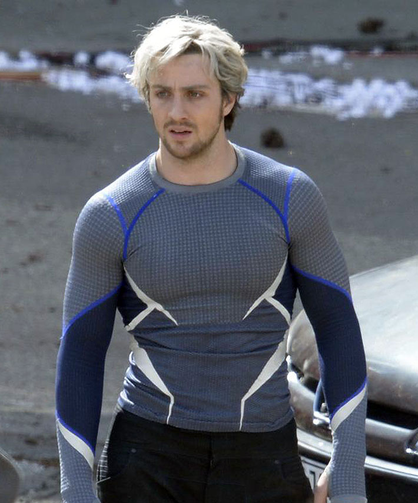
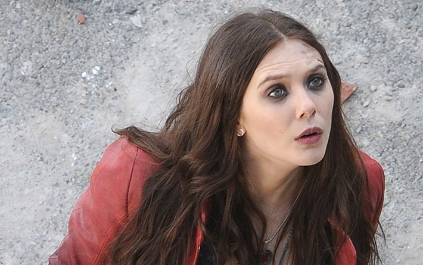
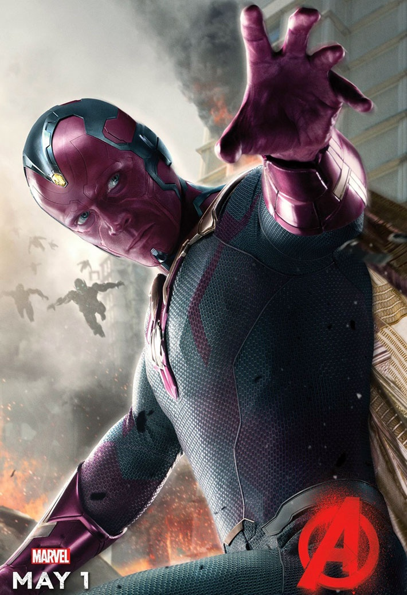
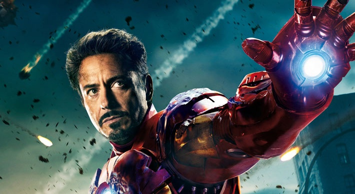

Personajes de La pelicula Avengers
Mercurio / Quicksilver / Pietro Maximoff (Aaron Taylor-Johnson) |
|---|
|  |
|
Este personaje supone una de las grandes novedades de esta entrega. Aaron Taylor-Johnson da vida a Mercurio (también llamado Quicksilver en muchos lugares, tomando el nombre original de USA). Por tema de derechos de autor, y al igual que sucede con su hermana Wanda Maximoff, aparece mencionado simplemente como "mejorado", sin dar detalle de su nombre ni referencia alguna al origen del mismo. Se supone que tanto ella como Wanda son los hijos de Magneto. Hay que recordar que debido a la división de derechos entre FOX y Marvel Studios, la primera no puede citar ni a Spiderman ni a Los Vengadores mientras la segunda no puede hacer mención a ningún tipo de personaje mutante ni a los Cuatro Fantásticos. En este caso, Mercurio y Bruja Escarlata son mutantes, así que no les pueden mencionar como tal ni hacer referencia alguna a Magneto (su padre). En Vengadores: la era de Ultrón el personaje de Mercurio tiene un papel decisivo... y hasta aquí se puede leer. Taylor-Johnson no desentona y cumple. |
| Bruja Escarlata / Wanda Maximoff (Elisabeth Olsen) |
|  |
|
Este personaje supone una de las grandes novedades de esta entrega. Aaron Taylor-Johnson da vida a Mercurio (también llamado Quicksilver en muchos lugares, tomando el nombre original de USA). Por tema de derechos de autor, y al igual que sucede con su hermana Wanda Maximoff, aparece mencionado simplemente como "mejorado", sin dar detalle de su nombre ni referencia alguna al origen del mismo. Se supone que tanto ella como Wanda son los hijos de Magneto. Hay que recordar que debido a la división de derechos entre FOX y Marvel Studios, la primera no puede citar ni a Spiderman ni a Los Vengadores mientras la segunda no puede hacer mención a ningún tipo de personaje mutante ni a los Cuatro Fantásticos. En este caso, Mercurio y Bruja Escarlata son mutantes, así que no les pueden mencionar como tal ni hacer referencia alguna a Magneto (su padre). En Vengadores: la era de Ultrón el personaje de Mercurio tiene un papel decisivo... y hasta aquí se puede leer. Taylor-Johnson no desentona y cumple. |
| La Visión / J.A.R.V.I.S. (Paul Bettany) |
|  |
|
El aclamado actor británico, que ha dejado su huella en grandes cintas (comerciales y minoritarias) como Master and Commander, Dogville, Una mente maravillosa, Mortdecai, Margin Call o El Código da Vinci... llevaba haciendo durante cinco largos años la voz del sistema operativo J.A.R.V.I.S. en las películas de Iron Man y en la primera parte de Los Vengadores. Mucho cuidado con este personaje porque está a llamado a ser uno de los mejores en el futuro de las películas. En Vengadores: la era de Ultrón toda su creación, presencia y desarrollo es explosiva. Se ha cuidado muchísimo a La Visión y casi el 100% de los fans de los tebeos van a estar muy satisfechos con él. Seguro que sí porque supone una sorpresa muy positiva. Bettany clava a La Visión. Cada vez que lo maquillaban, para ajustarle el color de maquillaje exacto y enfundarle en el traje, era necesario estar con el actor unas tres horas y media cada día. |
| Iron Man / Tony Stark (Robert Downey Jr.) |
|  |
|
Carismático y socarrón. Así se nos había presentado en las anteriores entregas Iron Man y todos podemos coincidir en que elegir a Downey Jr para meterse en la piel de este personaje ha sido una de las mejores decisiones de la franquicia. En Vengadores: la era de Ultrón tiene un lado más oscuro, profundo y casi hasta poderoso. Sigue siendo el líder real aunque a la sombra se encuentren Capitán América o Thor. Por favor, Downey Jr. no nos falles nunca. |